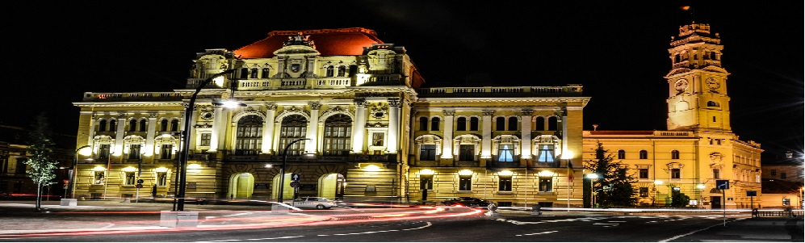
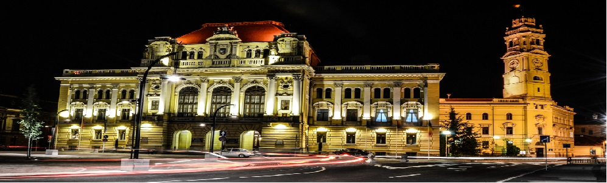

Oradea
City in Romania
Oradea is a city in northwest Romania, split by the Crișul Repede River. It’s known for baroque and art nouveau architecture, remnants of the Austro-Hungarian empire. Secessionist buildings line central Strada Republicii. Nearby, the neoclassical State Theater dominates King Ferdinand Square. The 18th-century Bishop’s Palace, with its frescoed rooms, is now home to the Museum of the Crisana Region.
Weather:
0°CELSIUS
Population:
201,547 (2012)